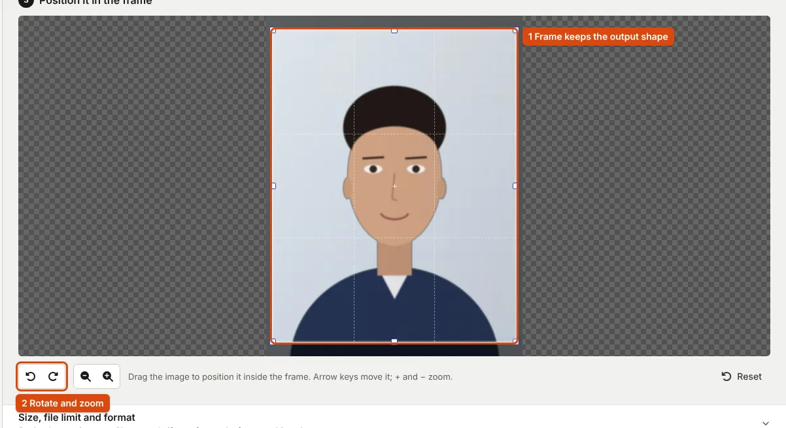

How to Take a Passport-Style Photo at Home for Job Applications
A good application photo depends on light, background and how much of the frame your face fills. A phone can get all three right if you control them.
What a passport-style photo looks like
Job portals, university application forms and employer onboarding forms that ask for a photo usually want the same kind of picture: a recent, sharp, front-facing head-and-shoulders photo against a plain light background. Each form states its own pixel size and file size, but the picture itself is judged on the same few qualities. The table lists them, with the reason each one matters.
| Quality | Why it matters |
|---|---|
| Plain white or very light background | Keeps attention on the face and survives heavy compression without blotches |
| Face fills most of the frame | After resizing to a few hundred pixels, a small face loses its detail |
| Facing the camera, both ears visible | A straight, even view is easier to recognise than a turned head |
| No cap, sunglasses or heavy filters | Anything that hides or alters the face makes the photo less useful for identification |
| Recent | The person at the interview or on the first day should match the photo |
| Natural expression, eyes open | The Indian passport instructions put it plainly: "Expression of the face should be natural (no grinning, frowning or raised eyebrows)" and "Eyes must be open" (passport instruction booklet) |
If a form gives its own rules, such as a coloured background or an exact face height, follow the form. The technique below still applies: only the crop and the final size change.
Light: face a window
- Stand facing a window in daylight, with no direct sun on your face. Light from the front fills the face evenly.
- Switch off ceiling lights above you: light from directly above leaves shadows under the eyebrows and nose.
- If one side of the face is darker, hold a sheet of white paper just outside the frame on that side to reflect light back.
- Avoid the flash. It leaves a bright patch on the forehead and glare on glasses.
Lighting matters more than the camera. A dark photo is noisy, and noise is detail that a JPEG has to spend bytes on, so a dim photo both looks worse and compresses worse than a well-lit one at the same file size.
Background, distance and framing
- Background: a plain white or very light wall, with you about a metre in front of it so your shadow falls behind you rather than on the wall. Check the corners of the frame for switches, frames or curtains.
- Camera height: at eye level. A low camera enlarges the chin; a high one shortens the face.
- Camera: the back camera, on a stack of books with a timer, or held by someone else. The back camera is usually sharper than the front one. Do not use digital zoom; take the photo wider and crop later.
- Distance: about 1.5 metres from the lens. Very close photos distort the nose and ears.
- Pose: face the camera straight on, shoulders level, mouth closed, hair away from the ears.
- Clothing: plain, everyday work clothing in a colour that differs from the background. A white shirt against a white wall makes the shoulders disappear.
- Space: leave room above the head and around the shoulders, so you can crop to the shape the form needs.
Take several shots and compare them at full size on a computer. Small blur is hard to see on a phone screen.

After the photo
- Open the original file in the resizer, enter the size the form asks for (for example 350 × 450 px under 50 KB), and crop so the face covers about three quarters of the frame.
- Download, then check the result at 100% zoom. If the face is soft, the limit was forced onto too many pixels; see getting under a KB limit without blur.
- For printed copies, the passport photo print tool lays out 3.5 × 4.5 cm copies on a 4 × 6 inch or A4 sheet for a photo lab or a home printer.
- Keep the original, uncropped photo. Each form may ask for a different size, and it is better to make each copy from the original than from an already shrunk file.
Do not replace the background in an editing app. Soft edges around hair are easy to spot and make the photo look edited. Retake the photo against a better wall instead. If a portal still refuses the file, photo upload errors and fixes explains each message, and the document checklist lists what else to prepare.
Frequently asked questions
Can I wear glasses?
If you wear them every day, usually yes, unless the form says otherwise. Tilt the frames slightly down or move away from the window's reflection to avoid glare, and never wear tinted or dark glasses.
Colour or black and white?
Colour, unless the form asks otherwise. A colour photo is the safe default.
Should I smile?
A relaxed, closed-mouth expression is the safe choice for a passport-style photo. A friendlier photo may suit a professional networking profile, but application forms usually want a neutral one.
Do I need a studio?
For most online forms, no: window light and a plain wall are enough. For printed copies of an official document, a photo lab gives the most consistent prints.
Sources
- Ministry of External Affairs: Instructions for filling the passport application form, photograph dos and don'ts
- MDN Web Docs: Image file type and format guide
The advice on this page is based on the sources listed above. Found a mistake? Report an error.